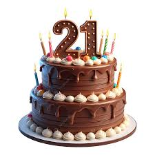

Untukmu, Hanifah...
Selamat Ulang Tahun ke-21!
Di hari spesialmu, 22 Juni 2025, sebuah pesan tulus kuserahkan.
Gulir untuk Pesan SpesialMerayakan Cahaya di Hari Lahirmu
Sebuah ucapan tulus dari lubuk hati.
Di tanggal yang selalu membawa kenangan indah, **22 Juni 2025**, aku ingin menjadi salah satu dari sekian banyak yang mengucapkan selamat ulang tahun kepadamu, Hanifah. Khususnya di momen spesial **usia 21 tahunmu ini**, semoga semua impianmu semakin dekat.
Semoga setiap detik di hari istimewamu ini dipenuhi dengan **kebahagiaan yang meluap**, tawa yang riang, dan cinta yang tulus dari orang-orang terkasih di sekitarmu. Biarlah cahaya kebahagiaanmu bersinar lebih terang dari lilin di kue ulang tahunmu.
Usia hanyalah angka, namun setiap tahun membawa kebijaksanaan dan pengalaman baru. Semoga usiamu yang bertambah ini membawa berkah yang tak terhingga, kedamaian hati, dan kesuksesan dalam setiap langkah yang engkau pilih.
"Semoga harimu seindah dirimu, Hanifah. Selamat ulang tahun!"
Sebuah Permohonan Maaf Terdalam
Masa lalu adalah pelajaran, bukan penyesalan abadi.
Doa dan Harapan Terbaik Selalu Untukmu
Semoga setiap langkahmu diberkahi.
Di usiamu yang baru ini, aku berdoa semoga Hanifah senantiasa diberkahi dengan **kesehatan yang prima**, kekuatan jiwa dan raga untuk menghadapi segala tantangan hidup.
Semoga **kebahagiaan yang berlimpah** senantiasa menyelimutimu, menjadikan setiap hari penuh makna dan suka cita yang tak terhingga.
Dalam karier dan cita-citamu, semoga **kesuksesan besar** selalu menyertai setiap usahamu. Raihlah semua impianmu dengan semangat yang tak pernah padam.
Melihatmu telah menemukan kebahagiaanmu sendiri, aku turut bahagia. Semoga hubunganmu dengan pasanganmu saat ini semakin **langgeng, penuh pengertian, dan harmonis**, menjadi sumber kekuatan dan cinta sejati.
Teruslah bersinar, Hanifah. Jadilah pribadi yang **menginspirasi**, penuh semangat, dan selalu menebarkan kebaikan di mana pun kamu berada.
Percayalah, doa terbaikku akan selalu menyertai setiap langkah dan perjalanan hidupmu.
Kisah & Refleksi Singkat
Mengukir pelajaran dari lembaran yang berlalu.
"Masa lalu adalah lentera yang menerangi jalan, bukan belenggu yang mengikat langkah."
Ada banyak hal yang telah kita lalui, pelajaran yang telah diambil, dan jalan yang berbeda yang kini kita pijak.
Setiap kisah memiliki babak baru, dan aku yakin babak hidupmu saat ini adalah yang terbaik yang bisa kamu dapatkan.
Di hari istimewamu ini, satu hal yang tetap sama adalah harapanku agar kamu selalu menemukan kebahagiaan, kedamaian, dan menjalani hidup yang penuh makna.
Terima kasih untuk setiap hal yang pernah ada. Semoga Hanifah senantiasa dikelilingi oleh cinta dan kebaikan.
Penghargaan untuk Kebahagiaanmu
Melihatmu bahagia adalah segalanya.
Aku sangat mengerti dan menghargai bahwa kamu kini telah memiliki kehidupan yang baru, dengan kebahagiaanmu sendiri, dan pasangan yang mendampingimu.
Pesan ini sama sekali tidak bermaksud untuk mengganggu atau melewati batas. Ini murni adalah bentuk **ketulusan hati** dan doa dari seseorang yang pernah memiliki bagian dalam hidupmu, yang kini hanya ingin melihatmu terus bersinar.
Aku berharap kamu dan pasanganmu selalu harmonis, saling mendukung, dan membangun masa depan yang penuh cinta. Semoga kebahagiaan kalian terus bersemi dan menjadi inspirasi bagi sekitarmu.
Kejutan Kecil di Hari Istimewamu!
Sebuah penutup manis dari hati.
Sebagai penutup dari pesan yang panjang ini, ada kejutan manis yang menantimu.
Waktu menuju hari ulang tahunmu:
Semoga setiap impianmu menjadi nyata, Hanifah!
Kejutan ini hanyalah simbol kecil dari doa, harapan, dan ketulusan hati yang tak terbatas.
Sekali lagi, Selamat Ulang Tahun ke-21, Hanifah. Semoga semua kebaikan selalu bersamamu.